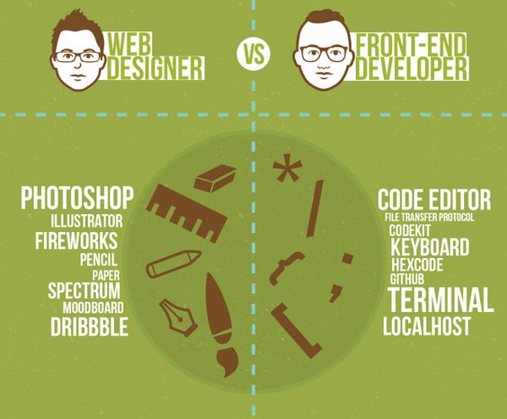

N/Спейсследващ слайд
Pпредишен слайд
Oвсички слайдове
ctrl+left clickувеличава елемента
If you want print version => add '
?print-pdf' at the end of slides URL (remove '#' fragment) and then print.
Like: https://wwwcourses.github.io/...CourseIntro.html?print-pdf
Въведение в курса
Създаден за
Създаден от
2015 - 2023,

За мен
За мен
Ива Е. Попова
- Преподавателски опит:
- 5 години като асистент в Технически Университет, гр. София.
Курсове: "Програмни Езици", "Програмиране в Интернет", "Дискретна математика", "Експертни системи и Изкуствен Интелект".
- 7+ години към водещи частни учебни центрове.
Курсове: "Data Bases (MySQL)", "Front-End Development", "JavaScript && TypeScript" "Python", "Machine Learning".
- Професионален опит:
- 7+ години като софтуерен инженер и Уеб разработчик (4 от които като старши инженер и ръководител на екип) в международни IT компании (Comptel(<Nokia), Internet Securities, Datamax, Experian).
- 6+ години като изследовател и консултант в стартъп компания в областта на Изкуствения Интелект (Sentiment Analysis , Ontologies, NLP(+LLMs)).
- Образование:
- Средно образование, НПГ по КТС - гр. Правец
- Маг. инж. по Компютърни Системи, Технически Университет, гр. София:
- Докторант по Системи с Изкуствен Интелект, Технически Университет, гр. София
Цели на курса
Цели на курса
Какво може
(и трябва!)
да очаквате от курса
- Да даде основополагащите познания относно съвременните HTML, CSS и JavaScript (ECMAScript6 && beyond) спецификации.
- Да въведе основните принципи на JavaScript и взаимодействието му с HTML/DOM и CSS/CSSOM.
{kind=link}
- Да усвоите добрите практики за разработка препоръчвани от W3C и да създавате качествен и оптимизиран код.
- Да обясни по достъпен начин необходимата терминология, така че да се почуствате в свои води в контекста на разработването на Уеб приложения.
- Чрез интензивното решаване на разнообразни реални практически проблеми да създаде увереност у вас за бъдещите ви Уеб проекти.
- Да ви улесни и вдъхнови да учите сами като ви представи препоръчани онлайн справочници, форуми, блогове, статии.

image from commons.wikimedia.org
{kind=link}
Да подредим бъркотията от понятия
Да подредим бъркотията от понятия
{kind=link}
UI/UX
- UX (User Experience) специалистите трябва да познават отлично продукта, маркетинг стратегиите и потребителите за да моделират сайта така, че да предполага по-добро потребителско изживяване.
- UI (User Interface) дизайнерите са фокусирани върху визията на един сайт (цветове, шрифтове, размери на бутони и други визуални елементи)
- Ключови умения
- Графичен дизайн (Photoshop/Illustrator)
- Моделиране, създаване на прототип на сайт (figma, sketch).
- Допълнителни умения
- Уеб Стандарти (HTML, CSS, JavaScript)
Front-end Developer
- Основни умения:
- Уеб Стандарти (HTML, CSS, JavaScript (TypeScript))
- Библиотеки, фреймуъркс, инструменти, като:
- Template Engines: Pug, Handlebars
- CSS Preprocessing: LESS, Sass
- CSS Libraries: Bootstrap, TailwindCSS
- JavaScript Libraries/Frameworks: React, Vue.js, Angular, Svelte
- Build Tools: webpack, Parcel, Rollup
- JavaScript Utilities: lodash, D3.js
- State Management: Redux, MobX, Recoil
Front-End Developer vs Web Designer
{kind=link}
Back-end Developer
- Основни умения
- Програмиране (Python | PHP | JavaScript | Ruby | Java | .NET | Go)
- Бази данни (MySQL | PostgreSQL | MongoDB | Redis)
- Мрежови протоколи (HTTP | HTTPS | FTP | WebSocket)
- Server-side frameworks (Django | Rails | Express.js | Spring)
- WebServices (RESTful | SOAP | GraphQL)
- Допълнителни умения
- HTML/CSS/JavaScript
Full-Stack Developer
Full-Stack = Front-End + Back-End
IT Jobs Explained With A Broken Light bulb
- Вижте цялата история тук: IT Jobs Explained With A Broken Light bulb
{kind=link}
Онлайн ресурси за курса
Онлайн ресурси за курса
Mail за курса
progressbg.www.courses@gmail.com
- Използвайте го за всякакви въпроси и обратна връзка (какво може да се подобри, какво ви затруднява,...)
Github акаунт за курса
- Github Repo: ProgressBG-Front-End-Dev-Beginners-Labs
- Тук ще бъдат качвани всички примери, които пишем на живо в часовете.
Други ресурси
- Facebook страница на Компютърно образователен център "Прогрес"
These slides are based on
customized version of
framework